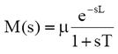
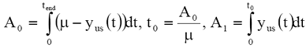
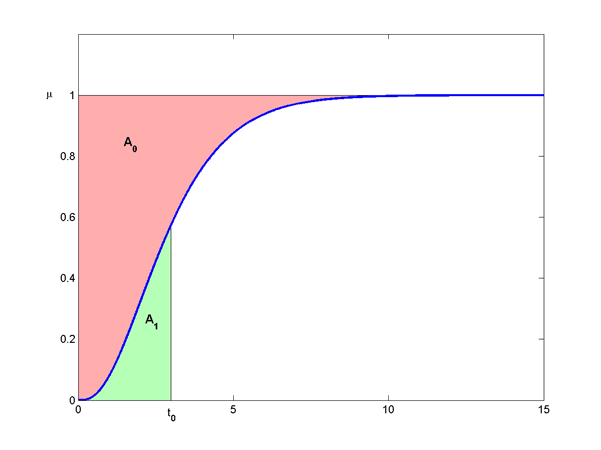
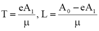
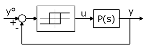
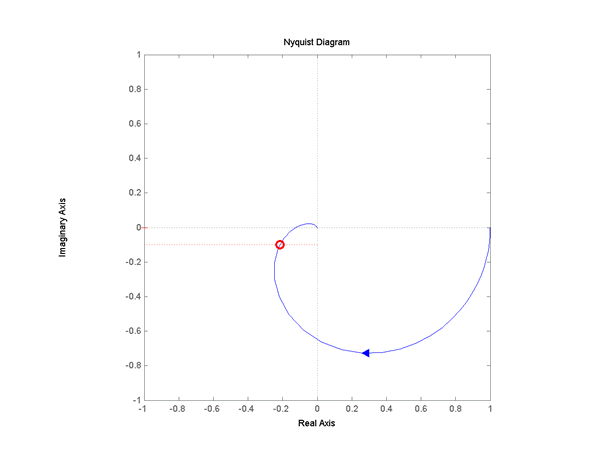

| AutotunerPID Toolkit | |
Process Identification
The first step in the autotuning process is the identification of a suitable description of the plant. In the following, the two most common methods used to retrieve a process description are introduced. The first one, called Areas Method, provides a model based process description and it is based on an open-loop step experiment. The second one, called Relay Method, provides a characteristic based model description and it is based on a closed-loop relay experiment.
Areas Method
The areas method belong to the so called model based process description since it identifies a model of the plant through a simple experiment performed on the plant. In the great majority of process loops, the process model seen by the regulator can be described by an asymptotically stable, strictly proper transfer function, which can be reasonably modeled with a First Order Plus Dead Time (FOPDT) model
Given the step response record ys(t), one must first compute the gain mu by dividing the response total swing by the input step amplitude As, and the unit step response yus(t)=ys(t)/As.
Then, denoting by tend the final experiment time, i.e. assuming that from tend on yus(t) = mu, it is necessary to compute in sequence the three quantities
where the areas A0 and A1, which motivate the method's name, are depicted below.
|  |
Finally, the other two parameters of the model are obtained as
and setting L=0 if the computed value be negative (which can happen if the real delay is small).
The method of areas is very powerful, remarkably noise-insensitive (since it uses integration) and quite accurate. Moreover, it has the ability of estimating the delay without obliging the user to define thresholds for deciding when the process response has started moving.
However, there are cases where a control step causes the controlled variable to asymptotically assume a ramp-like behavior: this case is commonly referred to as "runaway", "integrating" or "non self-regulating" processes and can be described by models with a pole in the origin of the s-plane. This case is not considered in the present version of the application.
Relay Method
The relay identification method belong to the so called characteristic based process description since it identifies a set of distinctive feature of the model rather than a (simple) model of it.
The main idea in the relay identification is that almost any stable process subject to relay feedback enters a limit cycle, from which some characteristics in the time or (especially) in the frequency domain are straightforward to obtain.
|  |
If a process with Nyquist curve P(jw) is subject to relay feedback with amplitude D (i.e. whose output is ±D) and hysteresis E (i.e. whose switching points are at ±E), a permanent oscillation of the process output occurs.
This oscillation has the frequency wox where P(jw) intersects the critical point locus of the relay, which is a straight line parallel to the real negative axis, located in the third quadrant of the complex plane and depending on the hysteresis entity.
|  |
This allows to identify one point of the process Nyquist curve P(jw) (the point indicated above with the circle). Its magnitude is related to the amplitude A of the controlled variable oscillation by |G(jwox)| = pA/4D and its phase can be easily deduced knowing that its real part is -pE/4D. Moreover the period of the oscillation can be simply computed.
| | The ISA PID Regulator | Synthesis Methods | |